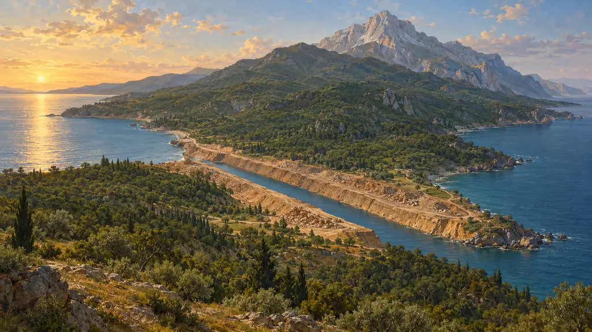
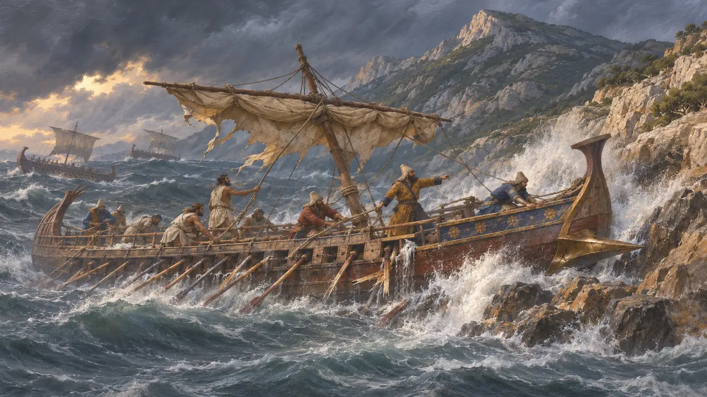
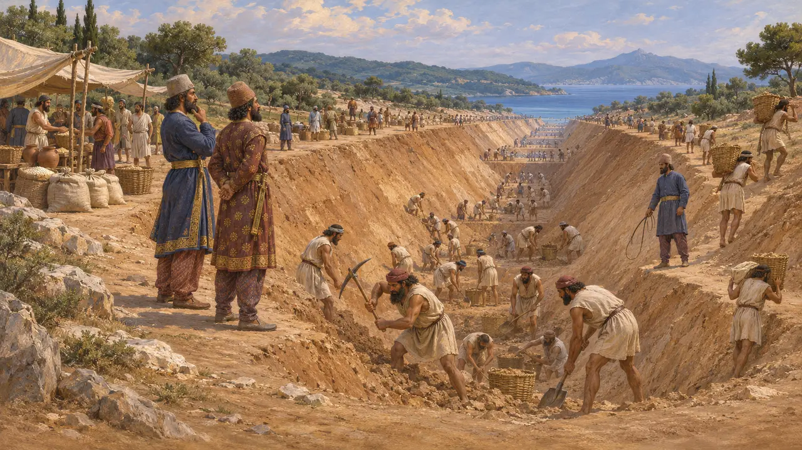
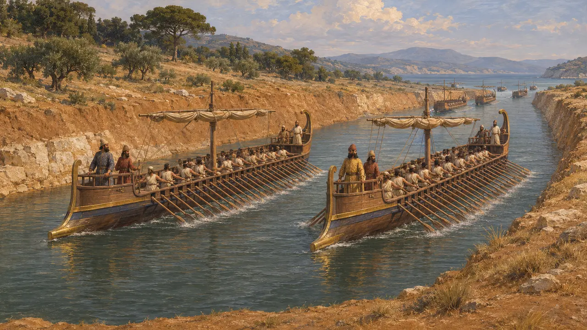
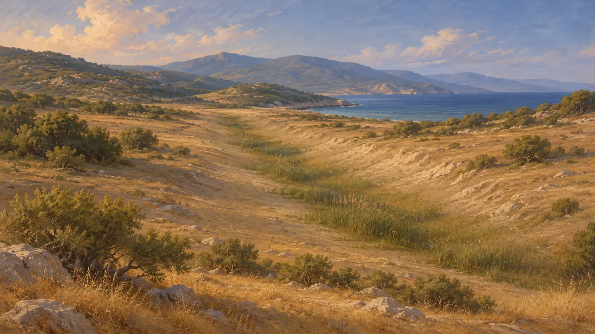
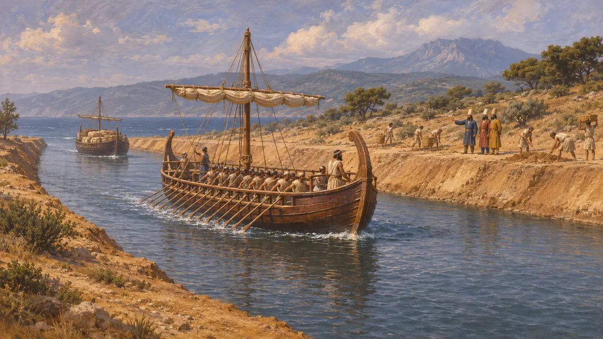

Афон
Мыс и перешеек на севере Эгейского моря, место кораблекрушения и канала, 492–480 гг. до н. э.
В игре: Уровень 9: Канал
Афон — самый восточный из трёх полуостровов, уходящих на юг от Халкидики; он оканчивается крутой горой высотой около 2000 метров. В 492 г. до н. э. у его мыса потерпел крушение персидский флот под началом Мардония. Тогда Ксеркс велел прорыть канал через узкий перешеек полуострова, чтобы его флот 480 г. до н. э. мог вовсе обойти мыс стороной.
В игре: Афон — девятый уровень игры (483–480 гг. до н. э.); среди его построек — Канал Ксеркса и Склад припасов. В игровой заметке он назван Святой Горой — это имя пришло от позднейших христианских монастырей, и Геродот им никогда не пользовался.

Крушение флота Мардония
Античное свидетельствоГеродот сообщает, что в 492 году до н. э. Мардоний повёл войско и флот вдоль фракийского побережья и что, когда корабли огибали Афон, их настиг яростный северный ветер и выбросил многие из них на скалы. По его словам, погибло около 300 кораблей и более 20 000 человек; историки считают эти цифры, вероятно, завышенными. Поскольку и его войско сильно пострадало от фракийских бригов, Мардоний повернул назад в Азию.
Herodotus 6.44-45

Прорытие перешейка
Античное свидетельствоГеродот пишет, что приготовления заняли около трёх лет, а земляными работами руководили двое персов — Бубар, сын Мегабаза, и Артахей, сын Артея. Люди из войска и жители окрестных городов копали посменно под бичами, и каждому народу отводился свой участок. Он добавляет, что лишь финикийцы сделали свой участок шире в верхней части, чтобы его стенки не обваливались, а зерно привозили из Азии на рынок неподалёку.
Herodotus 7.22-23

Флот проходит насквозь
Античное свидетельствоГеродот сообщает, что канал был настолько широк, что по нему могли идти на вёслах две триеры бок о бок, и что флот Ксеркса прошёл через него в 480 году до н. э., прежде чем двинуться на запад вдоль побережья к Ферме. Фукидид, описывая этот край во время Пелопоннесской войны, всё ещё упоминает царский канал близ Аканфа. Ни один из авторов не приводит измеренной ширины или глубины.
Herodotus 7.24, 7.122; Thucydides 4.109

Заиленный след в наши дни
Свидетельства эпохиТрасса канала сохранилась в виде низкой заиленной впадины длиной около 2 километров, пересекающей перешеек. Геофизические исследования и бурение кернов, проведённые британско-греческой экспедицией в 1990-х и начале 2000-х годов, выявили сплошное погребённое русло с водными отложениями. Это показало, что канал действительно был прорыт от моря до моря, в чём сомневались некоторые современные скептики.
B. S. J. Isserlin and others, 'The Canal of Xerxes: Facts and Problems', Annual of the British School at Athens, 2003

Гордыня или благоразумие
СпорныйГеродот полагал, что Ксеркс велел прорыть канал из гордыни и желания оставить по себе памятник, ведь корабли можно было перетащить через перешеек по суше. Современные историки обычно указывают на потерю флота в 492 году до н. э. и опасность мыса. Они видят в этой постройке разумный способ уберечь большой флот и его суда с припасами и отмечают, что Геродот писал в рамках греческой традиции, изображавшей Ксеркса надменным.
Herodotus 7.24; P. Briant, From Cyrus to Alexander, 2002
Источники
- Herodotus 6.44-45
- Herodotus 7.22-24
- Herodotus 7.122
- Thucydides 4.109
- B. S. J. Isserlin and others, 'The Canal of Xerxes: Facts and Problems', Annual of the British School at Athens, 2003
- P. Briant, From Cyrus to Alexander, 2002